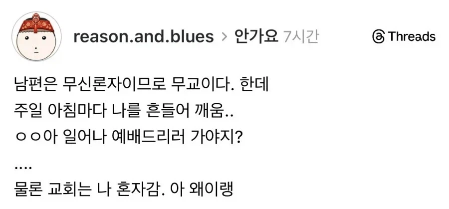

안가고 뭐해 ㅎㅎ

안가고 뭐해 ㅎㅎ
부모님 기독교고 난 무교인데,
일요일은 그냥 아침부터 저녁까지 프리였지ㅋㅋㅋ
와 웬만하면 모태신앙일텐데
그걸 두는 부모님이 대단
멋진 부모님이네
난 교회 안가면 날 너무 힘들게해서 어쩔수없이 가서 앉아있다 오는데..후우.. 부럽노
교회에 사건사고 없냐?
난 전역하고 안 나간다고 1년동안 버팅기다가
교회에서 사고터져서 부모님도 신앙이 흔들려서
이제 강요 안 하시더라ㅋㅋㅋㅋ
님도 기다려보셈 한국 기독교에서 사고 안 나는 경우는 극히 드물어서
우리 엄마아빠도 목사가 횡령해서 교회 안감ㅋㅋ
아 좀 가라고 ㅋㅋㅋㅋ
이상적인 형태네
아침에 가서 오후 예배까지 싹 드리고 오면 개꿀...... ㅋㅋ
신실한 무교 ㅋㅋㅋㅋㅋ
ㅋㅋㅋㅋㅋㅋㅋㅋ
너의 신앙을 존중한다
가라!

저러고 오전예배 하고 봉사활동 좀 하면서 시간보내다가 아싸리 오후예배 까지 끝내고 오면 진짜 개꿀임
무신론자가 예배‘드린다’까지 제대로네
아 얼른 좀 나가라곸ㅋㅋㅋㅋㅋㅋ 눈치껏 좀 저녁도 먹고오고 ㅋㅋㅋㅋ
교회가서 헛짓거리 안하는거면 좋지 뭐
교회 관련 글 중에 최근 본 글 중 유일하게 정상적으로 보이는 글이다. 무신론자 남편에게 교회 가자고 말하지 않는 아내. 그런 아내를 깨워서 교회에 보내려는 종교의 자유를 인정하는 남편.
같이 가자 안 하고 돈 갖다바치는 거 아니면 뭐 ㅋㅋㅋ
우리아빠도 엄마 꼬박꼬박 보내줬는데 단 하나 집에까지 와서 기도하는거는 조온나 싫어했음ㅋㅋㅋ
남편 : 신은 존재한다....
아 빨리가 폭딸하고 한숨 더 자게